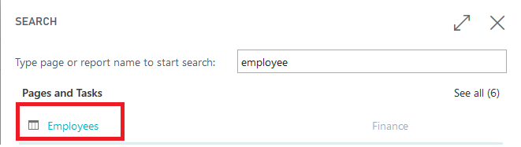
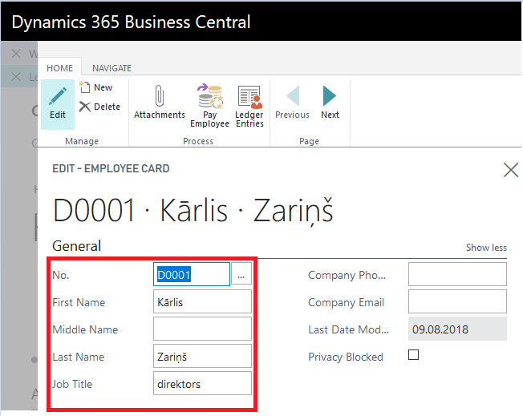
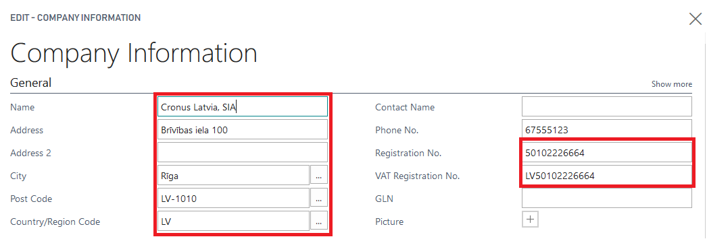

** This is still in progress**
Walkthrough: Import Configuration package
About this walkthrough: Basic necessary system setup for the use of Cash Management Localization for Latvia is created, when applying the configuration package LVI.LVI.CASH . Roles: No specific user roles are required. Story: You are Katrīna Pavlova, assigned by Cronus International to be a CFO in Cronus Latvia, SIA. The company runs business in the sphere of sales of furniture and rendering consultation services related to interior design upon request of local customers. Cronus Latvia, SIA is required to use customer company registration number on official documents sent to the customer. Your task is to create customer card for new Customer “Nordic Group, SIA” and enter the company registration number. Prerequisite: No specific prerequisites are required. Steps:
- Click on the button Search for Page or Report...

- Type Config. Packages and select Config. Packages from Pages and Tasks
- Select LVI.LVI.CASH package from list of Config. Packages and press Apply Package.
Configuration package ensures the following information:
- General Journal Template (CASHBOOK)
- General Journal Batch (RECEIPT, PAYMENT, DEFAULT)
- No.Series (KIO, KZO)
- No.Series Lines (for KIO, KZO)
Permissions Sets
Use of Cash Management Localization for Latvia requires the following standard permission sets to be assigned for the user: • D365 JOURNALS, EDIT • D365 JOURNALS, POST
Pre-requisites
The following information should be completed after importing configuration package: • Create employee card, who is responsible for Petty Cash • Complete Company Information • Create Bank Account Card per each Petty Cash location Proceed with following detailed steps:
Click on the button Search for Page or Report...

Type Employee and select Employees from Pages and Tasks 
Create new employees who is responsible for Intrastat reporting:
Complete No., Name, Surname, Job Title fields 
Click on the button Search for Page or Report...

Type Company Information and select Company Information from Pages and Tasks

Complete Company Information by: a. Entering i. Name ii. Address iii. Post Code iv. Country v. Registration No. vi. VAT Registration No. 
Create New Bank Account Posting Group for Petty cash: You use bank account posting groups to create linkages between your bank accounts and the central financial statements in the general ledger.
Walkthrough: How to set up bank account posting groups
About this walkthrough: Registration number is used in preparing bank export files and on document printouts, that are handed out to customers or vendors. This walkthrough demonstrates the process for entering registration numbers for customer in Customer card. Roles: No specific user roles are required. Story: You are Katrīna Pavlova, assigned by Cronus International to be a CFO in Cronus Latvia, SIA. The company runs business in the sphere of sales of furniture and rendering consultation services related to interior design upon request of local customers. Cronus Latvia, SIA is required to use customer company registration number on official documents sent to the customer. Your task is to create customer card for new Customer “Nordic Group, SIA” and enter the company registration number. Prerequisite: No specific prerequisites are required. Steps:
a. Click on the button Search for Page or Report...
 b. enter Bank Account Posting Groups and then choose the related link.
b. enter Bank Account Posting Groups and then choose the related link.
 c. Press New to create a relevant bank account posting group.
d. Enter the code for the group that you want to set up in the Code field. The code should be descriptive. You can use both numbers and letters. In the G/L Bank Account No. field, enter the desired account
c. Press New to create a relevant bank account posting group.
d. Enter the code for the group that you want to set up in the Code field. The code should be descriptive. You can use both numbers and letters. In the G/L Bank Account No. field, enter the desired account
- Complete Bank Account information (per each bank account separately)
a. Click on the button Search for Page or Report...
 b. Type Bank Accounts and select Bank Accounts from Pages and Tasks
b. Type Bank Accounts and select Bank Accounts from Pages and Tasks
 c. Press New, in order to create New Bank Account card per Petty Cash location
c. Press New, in order to create New Bank Account card per Petty Cash location
 d. Complete Bank Account Card information with Name, Address details
d. Complete Bank Account Card information with Name, Address details
e. Complete Bank Account Card information with Currency Code (if differs from Local Currency) and Bank Account Posting Group (specifies the asset account for cash transactions)
f. Complete Bank Account Card information with following information:
- Account Type- select Cash Desk
- Cashier No.- select an employee from the List of Employees, who is responsible for petty cash operations for this location
- Accountant No. - select an employee from the List of Employees, who holds the position of an accountant
Walkthrough: How to set up Cash Book Journal batches
About this walkthrough: Registration number is used in preparing bank export files and on document printouts, that are handed out to customers or vendors. This walkthrough demonstrates the process for entering registration numbers for customer in Customer card. Roles: No specific user roles are required. Story: You are Katrīna Pavlova, assigned by Cronus International to be a CFO in Cronus Latvia, SIA. The company runs business in the sphere of sales of furniture and rendering consultation services related to interior design upon request of local customers. Cronus Latvia, SIA is required to use customer company registration number on official documents sent to the customer. Your task is to create customer card for new Customer “Nordic Group, SIA” and enter the company registration number. Prerequisite: No specific prerequisites are required. Steps:
Cash Receipt Orders and Cash Payment Orders require to have separate Cash Book Journal batches.
- Click on the button Search for Page or Report...

- Type Cash Book Journals and select Cash Book Journals from Pages and Tasks
- Open Cash Book Journal batches
- Review New Cash Book Journal Batches created for Cash Receipt Orders and Cash Payment Orders
- Complete Name, Description of new Cash Book Journal Batches
- Review that Balancing Account Type is set to Bank Account,
- Set Balancing Account No. to Bank Account used for Petty Cash (See Pre-requisites)
- Set No. Series per each Cash Book Journal Batch
Walkthrough: How to use: Cash Book Journal
About this walkthrough: Registration number is used in preparing bank export files and on document printouts, that are handed out to customers or vendors. This walkthrough demonstrates the process for entering registration numbers for customer in Customer card. Roles: No specific user roles are required. Story: You are Katrīna Pavlova, assigned by Cronus International to be a CFO in Cronus Latvia, SIA. The company runs business in the sphere of sales of furniture and rendering consultation services related to interior design upon request of local customers. Cronus Latvia, SIA is required to use customer company registration number on official documents sent to the customer. Your task is to create customer card for new Customer “Nordic Group, SIA” and enter the company registration number. Prerequisite: No specific prerequisites are required. Steps:
LV Cash Book Journal is used for entering, posting and printing Cash Receipt Orders and Cash Payment Orders. Appropriate Batch required to be selected for each Cash Register. Information required: • Posting date- date when the transaction is posted • Document Type- o Payment- used for Cash Receipt Orders o Refund- used for Cash withdraw • Document No. - sequential number of the Cash Receipt/Payment Order, usually populated from Cash Book Journal Batch No.Series • Account Type- o Use Customer for receiving petty cash payments from Customers or giving a customer refund; the transaction shall appear in Customer Ledger Entries o Use Vendor for paying petty cash to Vendors or receiving a refund from a Vendor; the transaction shall appear in Customer Ledger Entries o Use G/L Account for registering Cash-In-Transit or miscellaneous expenses • Account No.- select a definite Customer/Vendor/G/L account from a list, based on the Account Type selected in previous step • Description- define the description to be displayed in Cash Receipt/Payment Orders • Employee No.- select an employee from List Of Employees who receives or provides petty cash • Person Identity No. - define the Identity No. of the counterparty • Person Ident. Doc. Info - define the Identity document information • Attachment Description - text field for any additional notes to be displayed in Cash Receipt/Payment Order • Debit Amount- • Credit Amount- • Amount- • Bal.Account Type- from Bank Accounts (Cash Desk) • Bal. Account No.- number of Cash Desk
Walkthrough: How to use: Create Cash Payment Order
Cash Management Localization for Latvia ensures possibility to create Cash Payment Orders in Dynamics 365 Business Central and print them, in order to be compliant with Latvia local legislation requirements.
About this walkthrough: Registration number is used in preparing bank export files and on document printouts, that are handed out to customers or vendors.
This walkthrough demonstrates the process for entering registration numbers for customer in Customer card.
Roles: No specific user roles are required.
Story: You are Katrīna Pavlova, assigned by Cronus International to be a CFO in Cronus Latvia, SIA. The company runs business in the sphere of sales of furniture and rendering consultation services related to interior design upon request of local customers.
Cronus Latvia, SIA is required to use customer company registration number on official documents sent to the customer. Your task is to create customer card for new Customer “Nordic Group, SIA” and enter the company registration number.
Prerequisite: No specific prerequisites are required.
Steps:
Purpose: Petty Cash Payment Orders require to be registered in the system with ability to provide a correct printout per transaction requested.
Available for printing from: reports can be printed from Cash Book Journals. Particular Print button Cash Payment Order is located in the Ribbon under the TAB Process.
 Also Cash Payment Order can be printed for a posted transaction, using report Cash Payment Order from Reports and Analysis with a filter of Bank Ledger Entry.
Pre-requisites: Cashier and Accountant need to be specified in Bank Account Card; Bank Account Card should have correct Bank Posting Group assigned; fields Person Identity No. and Person Identity Doc. No. fields are mandatory to be completed.
Document Type: Payment
Amount: Positive
Printing Options: the following printing options are available for this printout:
• Print Received Information in words – when selected, the amount in words is printed next to section Received of the report
Also Cash Payment Order can be printed for a posted transaction, using report Cash Payment Order from Reports and Analysis with a filter of Bank Ledger Entry.
Pre-requisites: Cashier and Accountant need to be specified in Bank Account Card; Bank Account Card should have correct Bank Posting Group assigned; fields Person Identity No. and Person Identity Doc. No. fields are mandatory to be completed.
Document Type: Payment
Amount: Positive
Printing Options: the following printing options are available for this printout:
• Print Received Information in words – when selected, the amount in words is printed next to section Received of the report
Also a filter on Gen. Journal Line can be applied, when creating the report from Cash Book Journal. When the printing options are selected, it is possible to use standard Send To…, Print, Preview functions.
How to use: Create Cash Receipt Order
Cash Management Localization for Latvia ensures possibility to create Cash Receipt Orders in Dynamics 365 Business Central and print them, in order to be compliant with Latvia local legislation requirements.
About this walkthrough: Registration number is used in preparing bank export files and on document printouts, that are handed out to customers or vendors.
This walkthrough demonstrates the process for entering registration numbers for customer in Customer card.
Roles: No specific user roles are required.
Story: You are Katrīna Pavlova, assigned by Cronus International to be a CFO in Cronus Latvia, SIA. The company runs business in the sphere of sales of furniture and rendering consultation services related to interior design upon request of local customers.
Cronus Latvia, SIA is required to use customer company registration number on official documents sent to the customer. Your task is to create customer card for new Customer “Nordic Group, SIA” and enter the company registration number.
Prerequisite: No specific prerequisites are required.
Steps:
Purpose: Petty Cash Receipt Orders require to be registered in the system with ability to provide a correct printout per transaction requested.
Available for printing from: reports can be printed from Cash Book Journals. Particular Print button Cash Payment Order is located in the Ribbon under the TAB Process.
Also Cash Payment Order can be printed for a posted transaction, using report Cash Payment Order from Reports and Analysis.
Pre-requisites: Cashier and Accountant need to be specified in Bank Account Card; Bank Account Card should have correct Bank Posting Group assigned; fields Person Identity No. and Person Identity Doc. No. fields are mandatory to be completed.
Document Type: Refund
Amount: Negative
Output Options: the following printing options are available for this printout- not available.
A filter on Gen. Journal Line can be applied, when creating the report from Cash Book Journal.
When the printing options are selected, it is possible to use standard Send To…, Print, Preview functions.
****Replace picture, when Company name is available
****Replace picture, when Company name is available
Walkthrough: How to use: Print Cash Book
Cash Management Localization for Latvia ensures possibility to register Cash Receipt Orders and Cash Payment Orders in Dynamics 365 Business Central and at the end of the period show all particular petty cash transactions in one report- Cash Book in order to be compliant with Latvia local legislation requirements.
About this walkthrough: Registration number is used in preparing bank export files and on document printouts, that are handed out to customers or vendors.
This walkthrough demonstrates the process for entering registration numbers for customer in Customer card.
Roles: No specific user roles are required.
Story: You are Katrīna Pavlova, assigned by Cronus International to be a CFO in Cronus Latvia, SIA. The company runs business in the sphere of sales of furniture and rendering consultation services related to interior design upon request of local customers.
Cronus Latvia, SIA is required to use customer company registration number on official documents sent to the customer. Your task is to create customer card for new Customer “Nordic Group, SIA” and enter the company registration number.
Prerequisite: No specific prerequisites are required.
Steps:
Purpose: Cash Book report shows all petty cash transactions per period.
Available for printing from: reports can be printed from Cash Book Journals. Particular Print button Cash Payment Order is located in the Ribbon under the TAB Process.
Pre-requisites: Bank Account used for Petty Cash has Cash Receipt or Cash Payment Orders posted in specific selected period.
Output Options: the following printing options are available for this printout.
• Report No. – enter a specific number that shall appear on the Cash Book printout
A filter on Gen. Journal Line can be applied, when creating the report from Cash Book Journal.
When the printing options are selected, it is possible to use standard Send To…, Print, Preview functions. ****Replace picture, when Company name is available